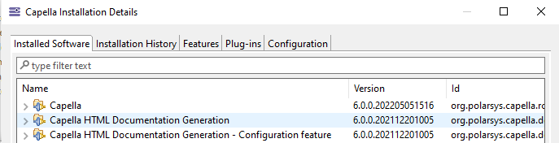

Installation and Uninstallation
Minimal requirements: Capella. Install Capella as described
here
(online documentation).
There are two options to install the Add-On:
-
Dropins:
Unzip the file and copy it in the dropins folder of your Capella installation and restart Capella. To uninstall, just remove it from the dropins folder.
-
Update site:
Help -> Install new software. Then'
Add 'a new repository location and click
Archive to select the update site zip file. Select a name and follow the installation wizard. Uncheck
Group by category to see the feature to install. To uninstall, click
Help -> About Capella and then
Installation Details. Find and select the Add-On in the
Installed Software tab and click
Uninstall.
To check that the Add-On is correctly installed, click on
Help -> About Capella -> Installation Details
Check that the
Capella Filtering is installed as below.
